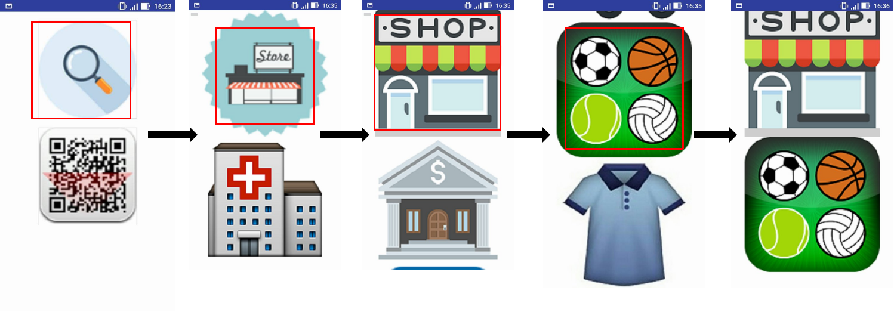

Informations
- Solution: Application Android
- Equipe: 4 étudiants de l'ESIR
- Date: Novembre 2017
Deuxième prix du Hackaton "INSOMNIACK 2.0"
Organisé par Capgemini et l'Epine (junior entreprise de l'ESIR)
Imagination et élaboration d'un projet en 24 heures. Création d'un prototype d'une application mobile permettant de communiquer grâce à des images et pictogrammes pour s'orienter dans un vaste bâtiment.
Exemple : Je suis dans un pays dont la langue m'est parfaitement inconnue. Je cherche un magasin de sport. Dans l'application, je clique sur l'icône "Recherche", puis "Centre commercial", puis "Magasin" et enfin "Sport". L'application me résume ensuite les pictogrammes choisis, je vais pouvoir les montrer à un passant pour qu'il m'indique l'emplacement de ce que je recherche.